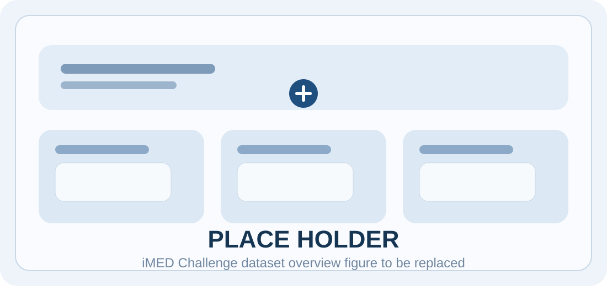

Dataset design built for hard surgical vision cases
The iMED Challenge uses task-specific subsets of the broader iMED dataset. The current proposal emphasizes difficult but realistic settings: deforming tissue, overlapping endoscope views, tool interaction, and clinically relevant variation across scenes.

Task-specific splits
| Task | Train | Validation | Hidden Test | Main purpose |
|---|---|---|---|---|
| iMED PE | 78 cases | 21 cases | 6 cases | Relative pose estimation under moving-camera, deformable scenes |
| iMED NVS | 84 cases | 23 cases | 6 cases | Novel view synthesis with static cameras and moving anatomy |
Subtask definitions
Pose Estimation case definition
One synchronized stereo video pair, around 10 to 15 seconds long, where one endoscope remains stationary while the other moves. Ground-truth relative poses are estimated using ArUco-assisted reconstruction and are provided for all frames.
Deformable NVS case definition
One stereo clip from Endoscope 2, together with the relative pose of Endoscope 1, while neither camera moves and the anatomical scene deforms. The held-out view is used to evaluate novel-view rendering quality.
Modalities and context
- Visible-light RGB endoscopic imaging from dual stereo systems.
- Acquisition categories include ex vivo, in vivo post-mortem, and in vivo live data.
- Metadata include acquisition category, motion source, anatomical region description, tool presence, and energy-device indicators.
- The dataset is anonymized and does not include individual-level patient metadata such as age, gender, or clinical history.
Annotations and pre-processing
The proposal describes ArUco-supported calibration and reconstruction pipelines for pose generation, plus fallback procedures using OpenCV ArUco detection, PnP, RANSAC, and temporal filtering when reconstructions do not meet quality thresholds. Marker regions are inpainted for training and evaluation.
Pose reference generation
COLMAP-based reconstruction with explicit quality control, supported by dense fiducial correspondences in low-texture scenes.
NVS support labels
Relative camera pose, calibration files, and pseudo-labels for anatomy and tools where included in the dataset release.
Known sources of error
- Residual calibration drift in live sequences.
- Potential inaccuracies in pseudo-labeled tool masks.
- Visual artifacts introduced when ArUco markers are digitally removed.
- Reconstruction degradation due to deformation and specular highlights.
Release plan
Based on the current proposal, public release of challenge materials is targeted for April 15, 2026. Official loaders, evaluation scripts, and baseline code are expected to accompany that release. The final public-facing site should replace this sentence with confirmed URLs once dataset hosting and GitHub repositories are live.